pharmaceutical Company
Redefining Human Cognition.
Our Mission
We are not just another pharmaceutical company; we are the architects of a new reality. Our groundbreaking project, Human Mind Virtualization (HMV), is paving the way for a future where consciousness, emotions, and memories can be seamlessly transferred into the limitless expanse of the digital realm. Guided by a commitment to ethical and responsible AI usage, Zeryuz is dedicated to safeguarding the essence of humanity in this new frontier.
Our Innovations
Zen.AI LLM
A revolutionary Large Language Model designed to seamlessly interface with medical patients, translating neural patterns into digital output with unparalleled accuracy.
Neural Link
A consumer-grade prototype VR headset enabling non-invasive, deep-dive immersive therapy, interpreting intent directly from the user's brain waves.
Project Seraph
The future of synthetic bio-mechanical assistance. A biomechanical chassis designed to provide mobility solutions to those bound to the HMV network.
Leadership

AXEL ZEED
Lead Researcher & Scientist, Division HMV
Spearheading the Zen.AI initiative, Lead Researcher Zeed has achieved an unprecedented milestone in neural-digital synchronization. Under the guidance of Founder Dr. Fritzgerald Frederich, Axel oversees the architecture of the Yuu Project—ensuring absolute stability within the Zeryuz server farm.